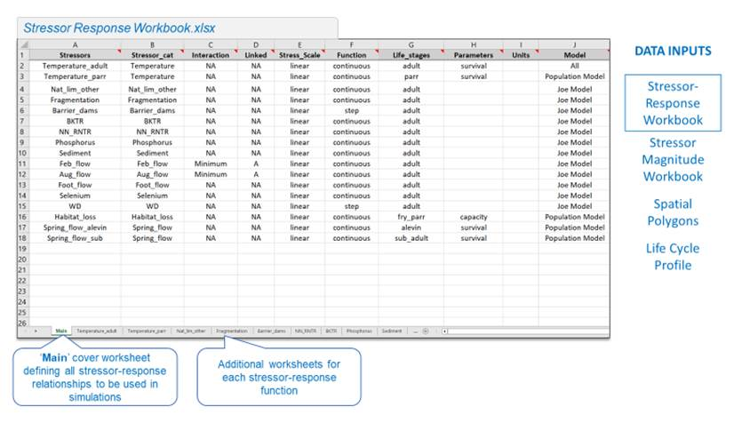
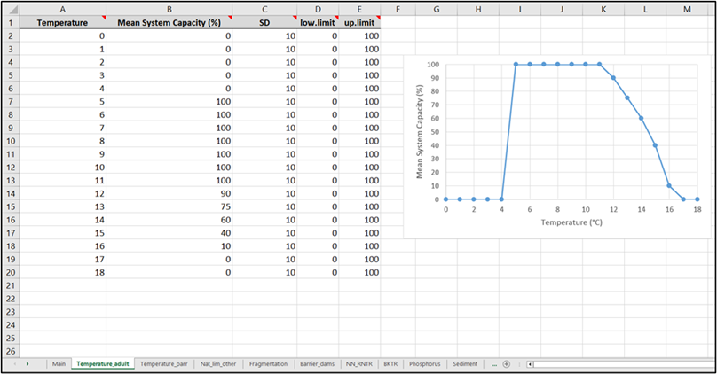
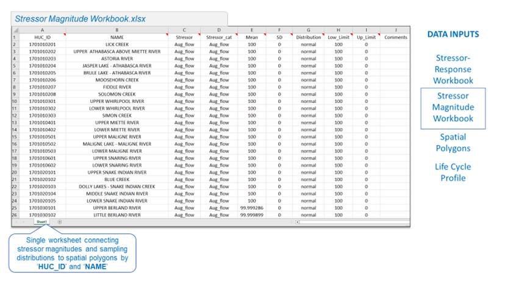
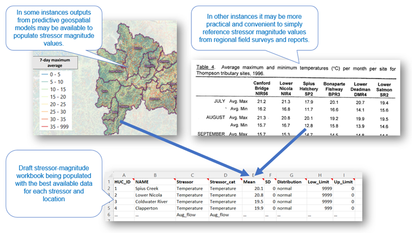
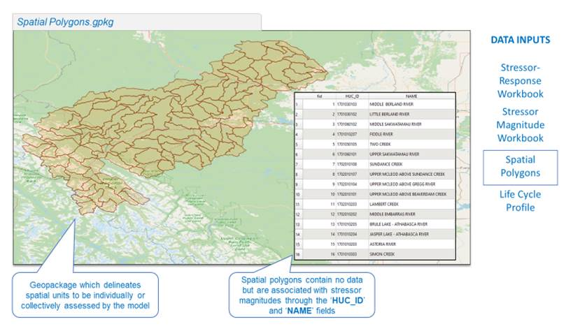
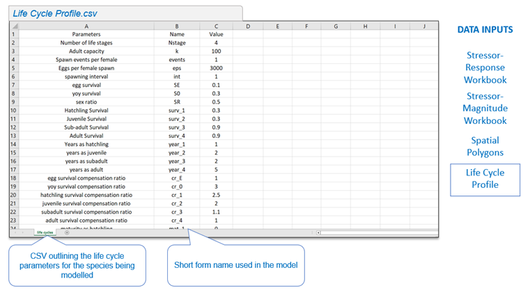

5 Data Inputs
A working example of all data inputs can be downloaded from a ‘demo’ directory with the CEMPRAShiny project repository: CEMPRAShiny demo.
Download the repository locally and navigate to the demo folder: .-main:
- stressor_response_demo.xlsx
- stressor_magnitude_demo.xlsx
- watersheds.gpkg
- life cycles.csv
5.1 Stressor-Response Workbook
5.1.1 Purpose
The stressor-response workbook contains all the stressor-response curves applicable to a target study system (e.g., Athabasca Rainbow Trout). These stressor-response curves are used within the CEMPRA (Joe Model) tool to predict cumulative effects additively given stressor magnitude values (discussed in the next section).
5.1.2 Layout
The stressor-response workbook is an Excel workbook containing all stressor-response functions to be used in the CEMPRA (Joe Model). The first worksheet contained within this Excel workbook must be titled “Main”. This worksheet is used as a coversheet to describe and organize each of the stressor-response curves. Subsequent worksheets describe each of the stressor-response functions relevant to a particular species, where each stressor-response function has its own worksheet. Note that the spelling of the stressor name must be identical between the “Stressors” column in the “Main” worksheet and the worksheet title (on the bottom tab) for each stressor.
Work is currently underway to develop an online stressor-response web database (a digital repository of stressor-response functions across species, systems and geographic areas compiled across reference literature). As this database grows, functionality will be expanded to automatically generate a stressor-response workbook of selected stressors using the R-package (CEMPRA). See details in Appendix A.
5.1.2.1 Main Worksheet

Figure 5.1 shows the main worksheet in the Stressor-Response workbook.
The purpose of the “Main” worksheet is to organize and summarize stressor-response functions within the workbook. The columns within this worksheet are set up as follows. Inputs must be diligently followed in order for the code to work:
5.1.2.2 Individual Stressor-Response Curve Worksheets
The remaining worksheets in the Stressor-response workbook are all used to describe the relationships between raw stressor values (on the x-axis) and the biological response (on the y-axis) (i.e., the stressor-response data).

- Example of an individual stressor worksheet within the stressor response Excel workbook.
Individual stressor worksheets within the stressor-response file contain stressor-response curves for each of the stressor-response functions outlined in the “Main” worksheet (one worksheet for each row). The spelling of the worksheet name must exactly match the spelling of the stressor on the ‘Main’ worksheet. Additional rows can be added (as needed) to increase the resolution and specify the shape of a complex non-linear stressor response curve. Threshold stressor-response functions or stressor-response functions with discrete values may have relatively few rows.
5.1.3 How to Build Your Own Stressor-Response Function
CEMPRA (Joe Model) users can either select pre-assembled stressor-response functions or define their own stressor-response functions for use in the model. A library is currently being developed to host pre-assembled stressor-response functions and their associated documentation (Appendix A). Users who develop their own stressor-response functions are encouraged to fill out the appropriate documentation for their function and upload it to this public stressor-response library for future use (Appendix A). Please see (MacPherson et al., 2020) and (Rosenfeld et al., 2022) for further discussion on fundamental considerations in the development of customized stressor-response functions.
5.1.3.1 Methodology
Depending on data availability, stressor-response functions may be developed from available empirical data, from the elicitation of experts and stakeholders, or from existing literature.
5.2 Stressor Magnitude File
5.2.1 Purpose
The stressor magnitude file is an Excel worksheet which defines and bounds each stressor within the individual locations (i.e., spatial units) being assessed. Similar to the stressor-response functions, stressor magnitude values are sampled across locations with stochasticity. The stressor magnitude workbook is structured accordingly, with data for each stressor and location entered into the dataset in a long table format (as opposed to the standard wide table format). Each row specifies a unique stressor for each unique location. Therefore, the number of rows in this dataset should be equal to the number of stressors multiplied by the number of locations. For each simulation in the CEMPRA tool, values are sampled at random with stochasticity for each stressor and location. For each year and batch replicate, stressor magnitude values will be drawn from each normal (or lognormal) distribution based on the Mean and SD (standard deviation) and then further constrained based on the specified lower and upper limits.

5.2.2 Layout
Each row in the stressor magnitude workbook specifies a relationship between a unique stressor and a unique location. Locations (discussed in detail in the next section) are specified by a unique ID (HUC_ID) and NAME. The HUC_ID column is a legacy from an older version of the Joe Model that referenced Hydrological Unit Codes as ID values, but HUC_ID can be any set of unique IDs specified by the user for their spatial units of interest. The NAME column can be blank but is included for convenience since many users find it challenging to cross-reference ID values between different datasets.
5.2.3 Assembling Your Own Stressor-Magnitude Data
Data for stressor magnitude estimates can come from a variety of sources, including GIS data, modelled data, field data, expert opinion, regional trends, or estimates from the literature. When assembling your own stressor magnitude data, stressor magnitudes and ranges will need to be assigned to the individual locations (spatial units) being represented in the model. Stressors within each location must be assigned a magnitude, and distribution or the SD value must be set to 0 for simulations with no stochasticity. Within each spatial unit, users can specify the mean value, standard deviation, distribution (normal or lognormal), and upper and lower limits of each stressor, as discussed in the previous section.

Stressor magnitude values should be aggregated to locations to represent location-averaged estimates. Locations can be split and aggregated as needed such that each location represents averaged generalized conditions.
5.3 Locations (Spatial Polygons)
Locations are represented in the CEMPRA tool as spatial polygons. Locations should be defined to reflect heterogeneity in stressor values across the study area.

5.4 Life Cycles Profile
The life cycle profile (csv file) is an optional input applicable to users who are interested in running the integrated life cycle model. The life cycles profile file specifies all input parameters required to run the life cycle model (e.g., number of stages, survival rates, fecundity, etc.). The format of the life cycles profile is a generic template, but once populated, it is used to parameterize the life cycle model for a specific study system. Usually, this consists of a target population (e.g., Athabasca Rainbow Trout, Nicola Basin Chinook Salmon, etc.).

A detailed discussion of the life cycles profile (csv file) is included in Section 8.2 with accompanying background information. It’s possible to run the Joe Model and omit the life cycle model entirely. Therefore, the life cycles profile csv should be considered as an optional input for advanced use cases of the CEMPRA tool.
Leave questions and comments below (via your GitHub account)